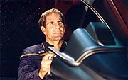
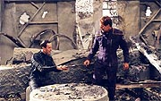
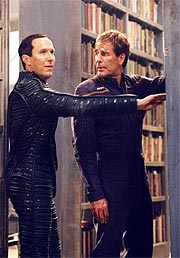

|
MANCHETE
DO EPISDIO
Embora
divertido, incio da temporada
no atende a expectativas da audincia
Episdio
anterior | Prximo
episdio
Sinopse:
A Enterprise est cercada por naves Sulibans. Sem opo, T'Pol tenta convencer Silik de que Archer no est mais a bordo. Ela convida-o a se certificar disso por si mesmo, indo at a nave. Silik concorda e prepara um grande grupo de abordagem. Apesar dos protestos de Trip para com a atitude de T'Pol, ela aponta que no havia alternativa, dado que as naves Sulibans poderiam destruir a Enterprise a qualquer momento.
Na Terra, o embaixador Vulcano Soval protesta junto ao almirante Forrest pelo fato de a Enterprise ainda no ter retornado. Aps ser pressionado pelo assistente do almirante, o comandante Williams, Soval revela que a ltima informao de sensores feita pelos Vulcanos da Enterprise mostrava a nave cercada por dezenas de outras, no-identificadas. Soval diz que T'Pol nunca concordaria com o fato de Archer no obedecer s ordens de voltar para casa e diz que isso razo para crer que ela est sendo mantida prisioneira. Ele diz que Vulcano enviar uma nave ao encontro da Enterprise.
 Enquanto isso, no sculo 31, Daniels est desnorteado. Ele diz a Archer que sua atitude tinha como objetivo proteger o futuro, mas acabou por destru-lo. Depois de revelar ao capito que no h modo de lev-lo de volta, Daniels fica chocado ao descobrir que um antigo monumento a uma Federao no foi sequer construdo nessa linha do tempo alternativa.
Em busca de mais informaes, Daniels e Archer vo at uma biblioteca local. L Daniels verifica que todos os eventos que deveriam acontecer do sculo 22 em diante no aconteceram, simplesmente por que Archer no estava l para iniciar tudo. O capito no acredita que seu papel seja to importante assim, mas Daniels confirma que o sucesso da misso da Enterprise levaria a outras, produzindo um efeito cascata que nunca teria acontecido sem a presena inicial de Archer.
No sculo 22, os Sulibans tomam a Enterprise e a levam para a Hlice, mantendo todos os oficiais humanos detidos em seus aposentos. L eles descobrem que o turboelevador da nave -- o ltimo lugar em que Archer foi visto -- contm uma estranha assinatura temporal. Silik comea a acreditar que T'Pol est dizendo a verdade, mas est confuso sobre o que fazer a seguir, uma vez que perdeu contato com seu mestre do futuro. Ele tenta seguidas vezes contat-lo, mas sem sucesso.
Diante disso, ele decide "interrogar" T'Pol. Usando mtodos de tortura e manipulao por drogas, ele acaba se certificando de que a Vulcana pouco sabe sobre o paradeiro de Archer ou sobre os atores da Guerra Fria Temporal. A nica coisa que ela diz repetidas vezes que o Diretrio Cientfico Vulcano considera viagens no tempo uma impossibilidade fsica.
T'Pol devolvida a seus aposentos, atordoada. Enquanto isso, Tucker consegue fazer uma ligao cruzada entre diferentes condutes da nave para contatar Reed em seus aposentos, apesar de todo o sistema de comunicaes interno estar desativado. Um a um ele vai contatando todos os tripulantes seniores.
No sculo 31, Daniels tem uma idia: embora viajar de volta ao passado continue sendo impossvel para eles, talvez seja possvel improvisar um comunicador temporal, a mesma tecnologia bsica que possui o mestre de Silik, usando o comunicador e o scanner que Archer levou ao futuro. Os dois comeam a trabalhar e o sistema eventualmente funciona, tornando possvel que o capito se comunique com T'Pol. Ele passa instrues Vulcana, que por sua vez se coordena com a tripulao snior graas aos esforos de Tucker para estabelecer contato com todos.
Para que o plano de Archer tenha continuidade, preciso que algum ande pelos tneis de ventilao da nave at o quarto de Phlox, para pegar algumas hyposprays, e depois ao quarto de Reed, entreg-las. Hoshi a nica pequena o suficiente para se mover pelos tubos e escalada para a misso. Ela tenta escapar, por sua claustrofobia, mas no h opo. Com algum esforo, a oficial de comunicaes consegue fazer todo o percurso, mas com um inconveniente: na hora de descer para o quarto de Reed, sua blusa fica enganchada na tubulao, e ela a perde. O oficial de armamentos, entretanto, corts o bastante para entregar rapidamente a ela uma outra blusa.
De posse das hyposprays, o prximo passo para retomar a nave: conseguir algumas armas Sulibans. T'Pol, Tucker e Reed se preparam para continuar. Eles vo sala de transporte, onde T'Pol apenas finge estar alucinando. Dois Sulibans se aproximam e a agridem, mas Tucker e Reed os surpreendem, imobilizando-os com as hyposprays. Eles tomam suas armas e levam com eles os recm-capturados, para que Hoshi mantenha vigilncia sobre eles.
Em seguida, Reed precisa ir aos antigos aposentos de Daniels, para pegar uma pea de tecnologia do futuro. Enquanto isso, T'Pol e Tucker se preparam para uma medida mais audaciosa: retomar a engenharia.
 O oficial de armamentos consegue chegar ao quarto de Daniels e recuperar a pea procurada, mas na sada surpreendido por dois guardas Sulibans. Ele levado ponte, onde interrogado e torturado por Silik. Aps apanhar muito, ele diz que no sabe o que faz aquele equipamento, mas que estava seguindo as instrues que Archer deixou antes de partir. Segundo Reed, o capito teria ordenado que ele destrusse aquela pea, para evitar que Silik a utilizasse para contatar algum, que ele no sabia quem era.
Silik v na informao uma esperana de voltar a contatar seu mestre e parte imediatamente para a Hlice com a pea. Enquanto isso, T'Pol e Tucker confrontam os Sulibans na engenharia e retomam o controle por tempo suficiente para sabotar os sistemas da nave.
Os Sulibans descobrem que o reator de dobra da Enterprise est prestes a explodir, e Silik ordena que a nave seja evacuada, deixada apenas com os humanos ainda presos, e levada para longe da Hlice, para evitar danific-la quando explodisse. Quando a nave abandonada deriva, a tripulao humana retoma o controle e parte em dobra mxima -- os danos ao reator eram apenas simulados.
Mais de 30 naves Sulibans partem em perseguio, mas Silik no est com eles -- ele permanece na Hlice, desesperado para contatar seu mestre. Sem saber o que est fazendo, ele acopla a pea que pegou de Reed cmara temporal da Hlice e tenta se comunicar. Mas acaba surpreendido quando, em vez de seu mestre, surge na sala o capito Archer em pessoa, que rapidamente pe o lder Suliban a nocaute.
Ameaando a vida de Silik, Archer consegue partir da Hlice com os discos de dados que comprovam a inocncia de sua nave no incidente que causou a morte dos colonos Paraaganos. Enquanto isso, a Enterprise est sendo massacrada pelas naves Sulibans. Eles s interrompem o ataque quando Archer ameaa matar Silik caso no se afastem de sua nave. O capito leva o lder Suliban a bordo como prisioneiro e a Enterprise parte, a fim de se encontrar com uma nave Vulcana.
Assim que encontram a nave aliada, Archer e sua tripulao entram em contato com o Comando da Frota Estelar, em San Francisco. L esto Soval e o almirante Forrest, alm de outros Vulcanos e humanos. Soval reconhece que as informaes obtidas por Archer provam que a Enterprise no foi responsvel pelo acidente com a colnia Paraagana, mas diz que a nave de Archer segue sendo uma ameaa ao quadrante, confirmando que o Alto Comando Vulcano permanecer com sua recomendao de ordenar o retorno imediato da Enterprise.
 Archer tenta argumentar que essa a forma com que humanos aprendem -- a partir de seus prprios erros --, mas o embaixador no parece impressionado. Mas ele no contava com a atitude de T'Pol, que resolve defender a misso da Enterprise e o desempenho de seus colegas humanos, apontando que os Vulcanos tambm cometeram erros, como o de manter um posto avanado militar em um santurio religioso. Aps a argumentao de T'Pol, Soval deixa a sala intempestivamente.
Aps considerar todas as informaes disponveis, a Frota Estelar decide permitir que a misso da Enterprise v adiante.
Comentrios:
Xeque-mate -- situao no xadrez em que no h soluo para o adversrio salvar seu rei, marcando portanto o fim do jogo. Foi nessa posio que os roteiristas de
Enterprise se colocaram ao final de "Shockwave, Part
I". Isso gerou uma concluso espetacular para a primeira temporada, mas o preo foi pago na hora de retomar a histria para o segundo ano. Afinal de contas, quando algum cria uma dificuldade de onde no pode sair pelas regras do jogo, a nica forma de escapar dela por meio de "truques" artificiais -- trapacear.
a nica maneira de tirar Archer daquele sculo 31 alternativo e lev-lo de volta ao sculo 22. Ou, explicando palavra por palavra, s mesmo usando um comunicador do sculo 22, um scanner do sculo 22 e uns pedaos de ferro velho para criar um comunicador temporal, ou fazendo com que algum inadvertidamente use uma pea de equipamento do sculo 31 que ele nem sabe como funciona em conjunto com tecnologia temporal supostamente vinda do sculo 28 para trazer de volta seu arqui-inimigo de um futuro perdido. Se isso no trapacear, no sei mais o que pode ser.
E esses so apenas os problemas mais gritantes. Tambm podemos facilmente perguntar por que os Sulibans da engenharia no soaram um alarme antes de serem imobilizados por Tucker e T'Pol, ou como Archer sabia de antemo que Silik tinha perdido contato com seu mestre do futuro para dizer a Reed o que dizer para fazer com que o Suliban utilizasse aquele equipamento em conjunto com sua cmara temporal para trazer o capito de volta, e no vamos encontrar respostas satisfatrias para essas questes em nenhum momento do episdio.
O que no quer dizer que "Shockwave, Part II" seja ruim -- isso apenas faz com que o telespectador mais atento se sinta um pouco enganado, por ter tido a esperana de ver uma soluo minimamente verossmil para o problema criado pela primeira parte. o que vimos, por exemplo, em
"The Best of Both
Worlds, Part II", de A Nova Gerao. Parecia ser uma soluo sem sada para Picard, mas no fim o resgate do capito foi totalmente verossmil e compreensvel, sem depender de tecnobaboseira ou qualquer outro artifcio de roteiro. A magia no se repete aqui.
Mesmo assim, h muito para se entreter com o segmento. Toda a ao de mobilizao da tripulao snior da Enterprise para retomar a nave, embora tenha tambm uns furos pelo caminho, bem executada marca bem o tom de camaradagem e de trabalho de equipe que tanto agrada nas tripulaes das sries de
Jornada nas Estrelas. E a concluso de todo esse esforo, apesar de bastante inverossmil, empolgante, com a Enterprise prestes a explodir, vazando plasma por todos os cantos nas naceles, para no momento seguinte se tornar totalmente operacional e entrar em dobra, tudo na mesma tomada. Realmente um primor de cena, principalmente por depender somente de efeitos especiais para se sustentar.
Alis, o episdio est recheado de efeitos especiais. Alm de espetaculares tomadas da Enterprise cercada pelas naves Sulibans, acoplada Hlice e, depois, nave Vulcana, e em batalha, ainda havia todo um desafio visual a ser contemplado com Archer indo para a Terra de quase mil anos no futuro -- em uma realidade alternativa.
As cenas no sculo 31 so todas bem realizadas, com belas tomadas daquele futuro destroado e de uma imensa biblioteca de livros de papel. Embora elas em geral acabem se denunciando como imagens geradas por computador, devido ao tom de artificialidade com que se misturam s presenas de Daniels e Archer, impossvel dizer que no so cenas agradveis de se ver. Infelizmente, o sculo 31 como um todo deixou a desejar, tendo ficado margem da trama -- apenas um lugar de onde Archer tem de escapar. Com o fim de
"Shockwave, Part I", eu esperaria mais dessa linha de histria, com Daniels tentando descobrir de forma mais detalhada o que deu errado.
A propsito, Daniels parece muito menos interessante aqui do que em sua primeira apario, em
"Cold Front", ou mesmo na primeira parte de
"Shockwave". Antes o personagem parecia seguro de si, e suas respostas vagas pareciam apenas manobras evasivas. Aqui Daniels parece realmente no saber de nada, nem entender com o que est lidando ou quais so os problemas que ele precisa resolver. Tudo bem que ele ficou abalado com a destruio do futuro da humanidade, mas para quem era um agente infiltrado na tripulao de Archer para combater numa Guerra Fria Temporal, Daniels parece um pouco despreparado demais para as implicaes de tal conflito.
Mas eu guardei o melhor para o final. O que realmente bem trabalhada em
"Shockwave, Part II", embora rapidamente, a subtrama do cancelamento da misso da Enterprise. Como em
"Shadows of P'Jem", as cenas de Soval no Comando da Frota Estelar tm um sabor especial. A discusso acirrada que ele mantm com Forrest e seu assistente Williams (cujo desempenho certamente justifica, embora no garanta, futuras aparies) e o fato de o Vulcano (e seu governo) no mudar de idia quanto ao "erro" que seria o lanamento da Enterprise, mesmo com a inocncia sobre o incidente com os Paraaganos comprovada, do uma grande fora questo, embora todos j saibamos de antemo que a Enterprise vai continuar em sua jornada.
E a cena climtica do episdio, com T'Pol se mobilizando contra seu superior e defendendo a misso da Enterprise, com direito a lio de moral sobre o episdio P'Jem, ajudou a sedimentar a relao da Vulcana com a tripulao, alm de coloc-la inequvocamente como "parte do time". Excelente tratamento.
No quesito boas sacadas, tambm podemos citar a sensacional sequncia em que o capito Archer "ameaa" violar toda a continuidade estabelecida ao ler um livro sobre os Romulanos, para o terror dos fs, antes de ser interrompido por Daniels! E a chegada de Archer ao sculo 22, se no convincente, ao menos foi bem divertida.
No final, "Shockwave, Part II" uma concluso satisfatria (mas no brilhante) para todos os problemas ofertados na primeira parte. Responde muito bem srie como um todo, se encaixando bem premissa de mostrar como os humanos aprenderam a sobreviver no espao, usando seus prprios erros como guias, mas fracassa em responder com a elegncia devida a todas as dificuldades momentneas apresentadas na primeira parte. Quando as dificuldades so gigantescas para os personagens, as expectativas da audincia (e os desafios dos roteiristas) tambm o so. Diante isso, apesar de suas qualidades, de seu bom andamento e da boa dose de entretenimento envolvida, o episdio acaba sendo decepcionante em alguns nveis.
Citaes:
Archer - "What are you going to do? Turn a bicycle into a time machine?"
("O que voc vai fazer? Transformar uma bicicleta numa mquina do tempo?")
Archer - "What's that? The Romulan Star Empire..."
("O que isso? O Imprio Estelar Romulano...")
Daniels - "Maybe you shouldn't be reading this."
("Talvez voc no devesse estar lendo isso.")
Silik - "Please, repeat what you said."
("Por favor, repita o que disse.")
Archer [aps dar uma voadora no Suliban] - "I said you're an ugly bastard."
("Eu disse que voc um bastardo nojento.")
T'Pol - "Learning from one's mistakes is hardly exclusive to humans."
("Aprender com os prprios erros dificilmente exclusividade humana.")
T'Pol - "I still don't believe in time travel."
("Eu ainda no acredito em viagens no tempo.")
Archer - "The hell you don't!"
("O caramba que no acredita!")
Trivia:
 Remover o capito Archer da linha do tempo causa grandes anomalias no fluxo natural dos eventos. Como resultado, a Federao no existe no sculo 31. Tudo aps a criao do Programa Dobra Cinco interrompido, mostrando que Archer tem um papel-chave na histria da Federao.
Remover o capito Archer da linha do tempo causa grandes anomalias no fluxo natural dos eventos. Como resultado, a Federao no existe no sculo 31. Tudo aps a criao do Programa Dobra Cinco interrompido, mostrando que Archer tem um papel-chave na histria da Federao.
Archer encontra um livro na biblioteca do sculo 31 chamado "The Romulan Star Empire" (O Imprio Estelar Romulano), uma organizao que eles ainda no haviam encontrado.
A soluo para o cliffhanger foi encontrada rapidamente, segundo o produtor-executivo Rick Berman, em entrevista antes do hiato entre temporadas. "Nos j quebramos a histria para a parte dois, o que bem raro para ns. Ns normalmente esperamos at o fim do vero, voltamos e descobrimos como diabos vamos terminar o cliffhanger. Mas imediatamente aps o trmino da temporada, Brannon e eu meio que nos trancamos numa sala por uma semana e tivemos idias para basicamente os trs primeiros episdios da nova temporada."
Embora obviamente fosse o primeiro episdio da temporada, foi o segundo a ser filmado. As filmagens foram de 9 a 18 de julho de 2002.
Ficha
tcnica:
Escrito por
Rick Berman & Brannon Braga
Direo de Allan Kroeker
Exibido em 18/09/2002
Produo:
028
Elenco:
Scott
Bakula como Jonathan Archer
Jolene Blalock como
T'Pol
John Billingsley
como Phlox
Anthony Montgomery
como Travis Mayweather
Connor Trinneer como
Charlie 'Trip' Tucker III
Dominic Keating como
Malcolm Reed
Linda Park como Hoshi Sato
Elenco convidado:
John Fleck como Silik
Matt Winston como Daniels
Vaughn Armstrong como almirante Forrest
Gary Graham como embaixador Soval
Keith Allan como Raan
Jim Fitzpatrick como comandante Dan Williams
Michael Kosik como soldado Suliban
Episdio
anterior | Prximo
episdio
|